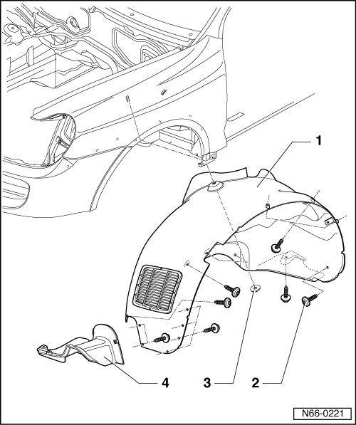

Front Wheel Housing Liner Assembly Overview
Wheel Housing Liners
Front Wheel Housing Liner Assembly Overview
• Due to model variations, small deviations must be considered during removal and installation.

1 Wheel housing liner
• Material - PP/EPDM
• removing:
- Unbolt wheel.
- Remove bolts - 2 - (quantity: 15) and nuts - 3 - (quantity: 2) and remove wheel housing liner.
2 Bolt
• Quantity: 15
• 1.5 Nm
3 Hex nut
• Quantity: 2
• 1.5 Nm
4 Wheel housing liner cover